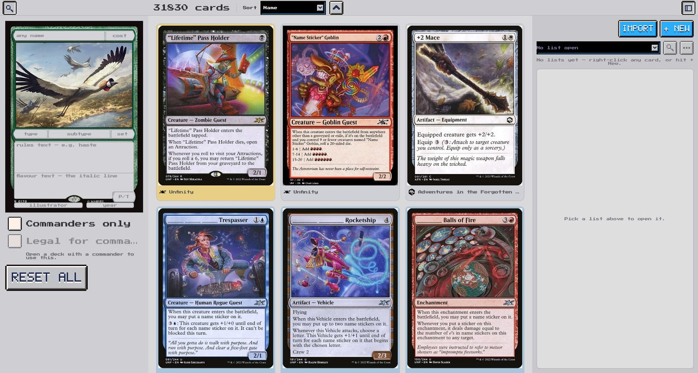

The whole pool
Every Commander-legal card, filtered by colour identity, mana value, type, subtype, rules text, flavour text, artist, set, rarity, year, power and toughness — in any combination.
Search all 31,830 Commander-legal cards, build lists and decks side by side, and have every deck check itself against the format while you work.
Open the builderFirst visit downloads about 17 MB and takes a few seconds. Nothing to install, and no account needed.
Built for a keyboard and mouse — a phone will load it, but the layout wants a wide screen.

Every Commander-legal card, filtered by colour identity, mana value, type, subtype, rules text, flavour text, artist, set, rarity, year, power and toughness — in any combination.
A deck checks itself continuously: 100 cards, singleton, and colour identity against your commander. No submit button, no surprises at the table.
Paste a list from Moxfield, Archidekt, MTGO, TappedOut or Deckstats and it resolves the names for you. Export back out in three formats.
Keep loose piles of cards next to real decks. A list becomes a deck the moment you give it a commander.
In this browser, for now — they survive closing the tab, but they do not follow you to another machine, and clearing site data clears them. Accounts and syncing are being built; until then, use Export for anything you would be sad to lose.